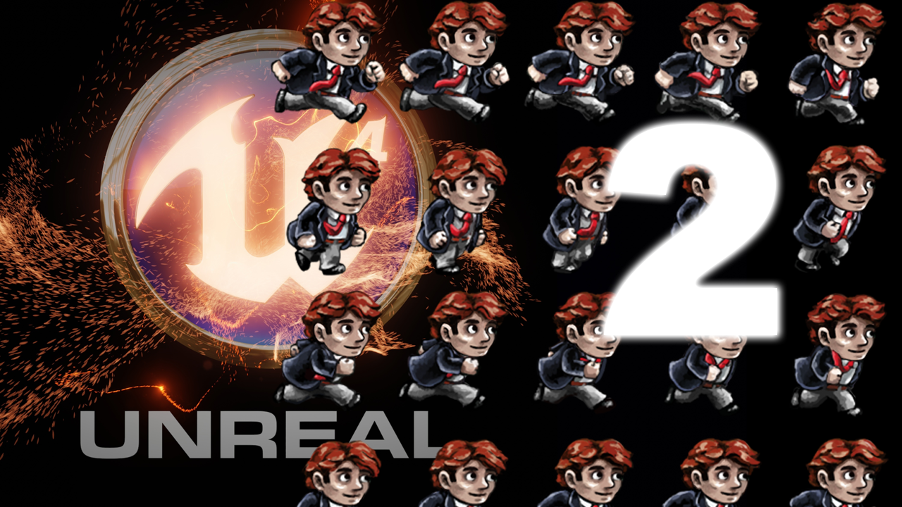

2D Sprite Animations - video
Creating 2D Sprite Animations
This is a tutorial to take you in the process of implementing your sprites and make it move inside Unreal Engine using the 2d tools "Paper2D"
<youtube> https://www.youtube.com/watch?v=9FKG7fFWKOA
